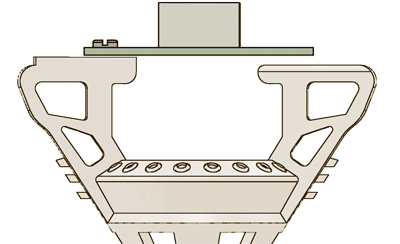

Attaching EIB to body
Attach EIB to the drive body with screws and/or epoxy.
At the same time, insert fiber/s through the holes in EIB.
If connections of electrodes to the opposing side of the EIB are desired, only glue and/or screw the EIB to the drive body on the higher side (see later step). Also, if this 'criss-cross' pattern of electrodes under the EIB is desired, consider delaying adding the fiber until after loading the electrodes. Otherwise, it will be harder to move the electrodes over to the opposite side of the EIB.
Gluing fibers to EIB
Position fibers at desired depth, and glue them to the EIB with epoxy.
Make sure to add epoxy to the top and bottom of the EIB to securely stabilize the ferrule.
Even if no optical fibers are used, gluing an empty 1.25mm optical ferrule or similar piece of metal into the ferrule mounting hole(s) of the EIB provides a convenient way to attach the cap later.
Loading electrodes
The following is a adapted standard protocol for electrode loading.
See Nguyen et al. 2009 for an in-depth video protocol for electrode loading.
Load electrodes into the shuttle tubes using ceramic tipped forceps.
Cut each electrode to the desired length with very sharp scissors according to your electrode protocol. If required, make small adjustments to electrode depth, and glue it to the top of shuttle tubes with epoxy. After epoxy is cured, connect the electrode to the EIB using gold pins and/or solder. Document the mapping of channels to drive number and electrode position.

Make sure that there is enough slack in the electrode wire to allow for the full range of drive motion. The top of the drive body is asymmetric, so that the EIB stands off by ~.6mm from one side of the body when only the higher side is glued and/or screwed to the body. This way, electrodes can be loaded and brought around to the other side of the EIB so that the electrodes run under the EIB and are protected. We have also gotten good results from loading the electrodes to the closest vias in the EIB, but this requires a slightly higher level of care to avoid damaging the wires with the screw driver when lowering drives.
Attach the uninsulated shield wire to the EIB with gold pins and/or solder. The wire only needs to be long enough to make good contact with the shield cone later.
Attach the ground wire to the EIB with gold pins and/or solder. The ground wire should extend to the bottom of the drive with enough free length to reach the desired ground site during the implant surgery. Make sure the ground wire is routed along one of the sides of the drive so that it doesn't interfere with lowering the drives later.